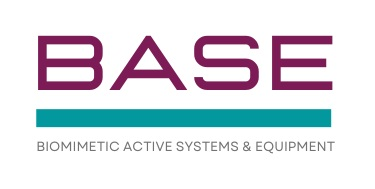
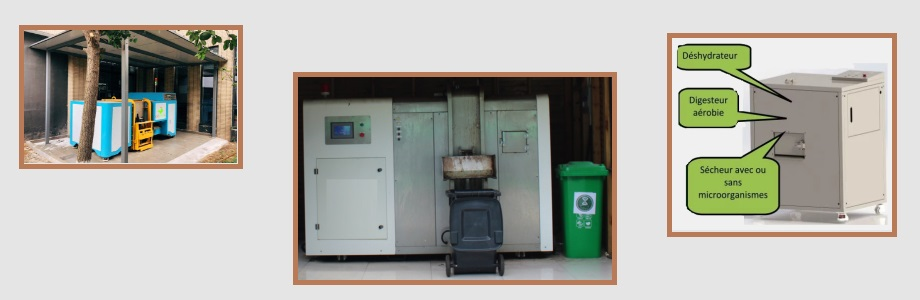
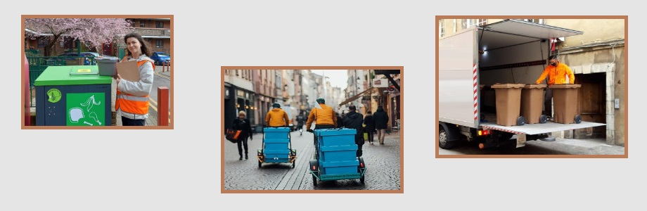

BASE sas
Trier - Collecter - Traiter - Valoriser

BASE sas
propose des machines de compostage de pointe (traitement de déchets alimentaires entre 5kg et 30T par jour en fonction de nos machines)
BASE sas
vous aide pour optimiser la gestion des déchets, réduire les coûts et impacter positivement l'environnement.
BASE sas
vous accompagne pour la mise en place de solution de tri, de collecte et de valorisation de vos déchets.

Pour toute demande pour nos équipements comme pour nos services,
merci de nous envoyer un message sur
xmartin(@)base-sas(.)fr
6 boulevard des Xettes
88 400 Gerardmer
France
xmartin(@)base-sas.fr